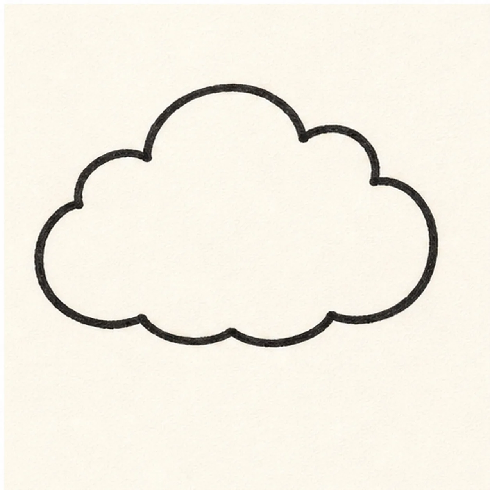
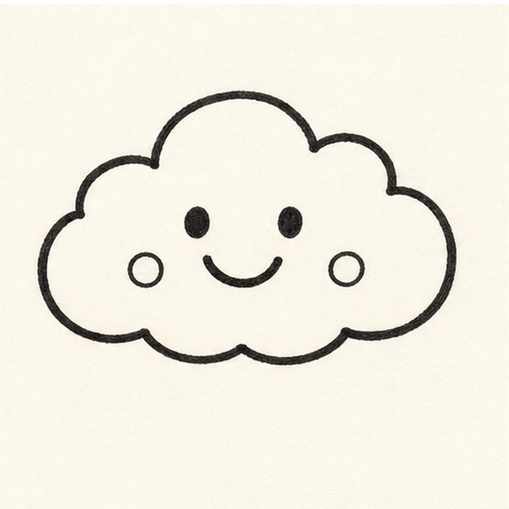
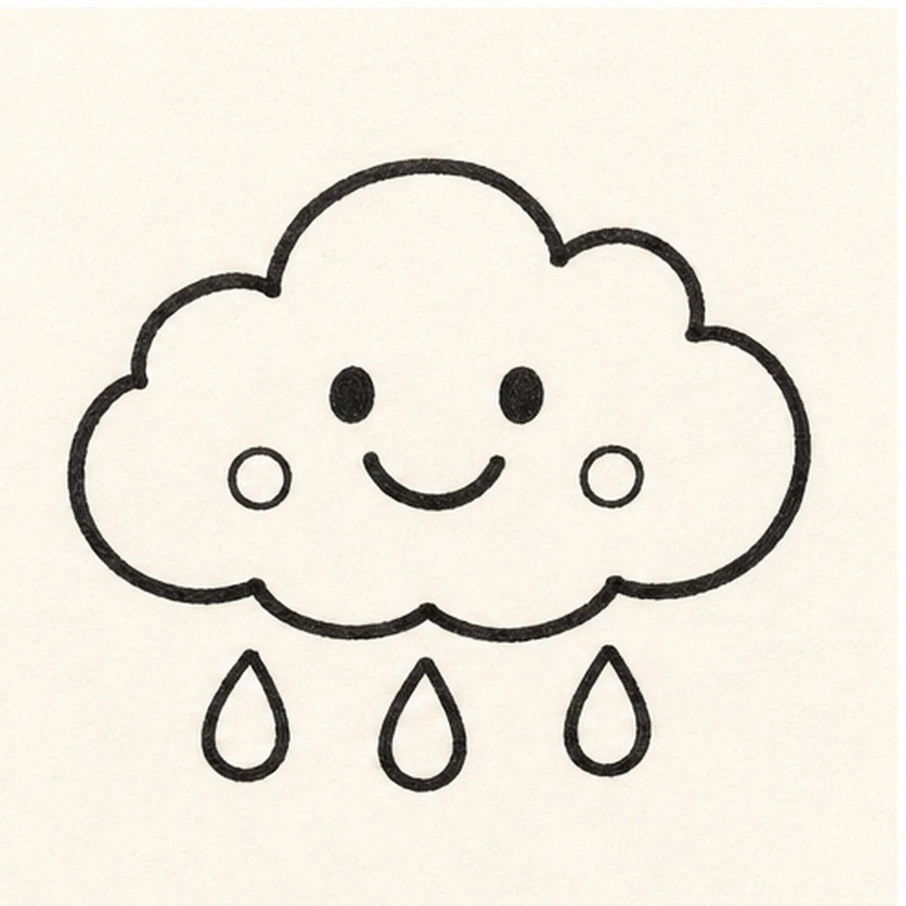
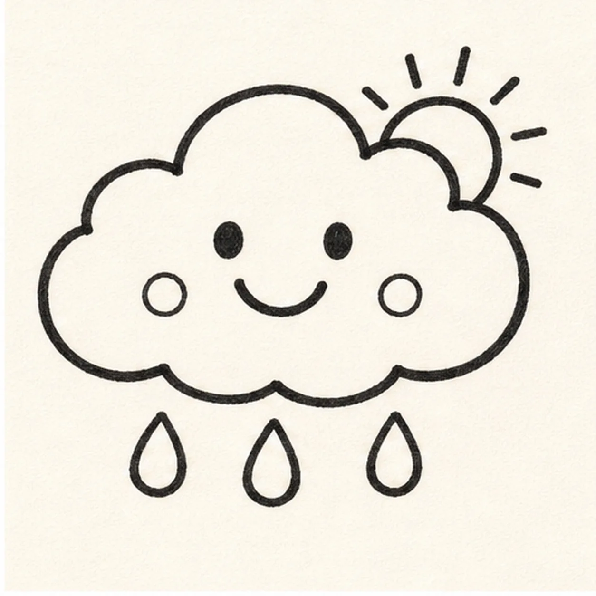
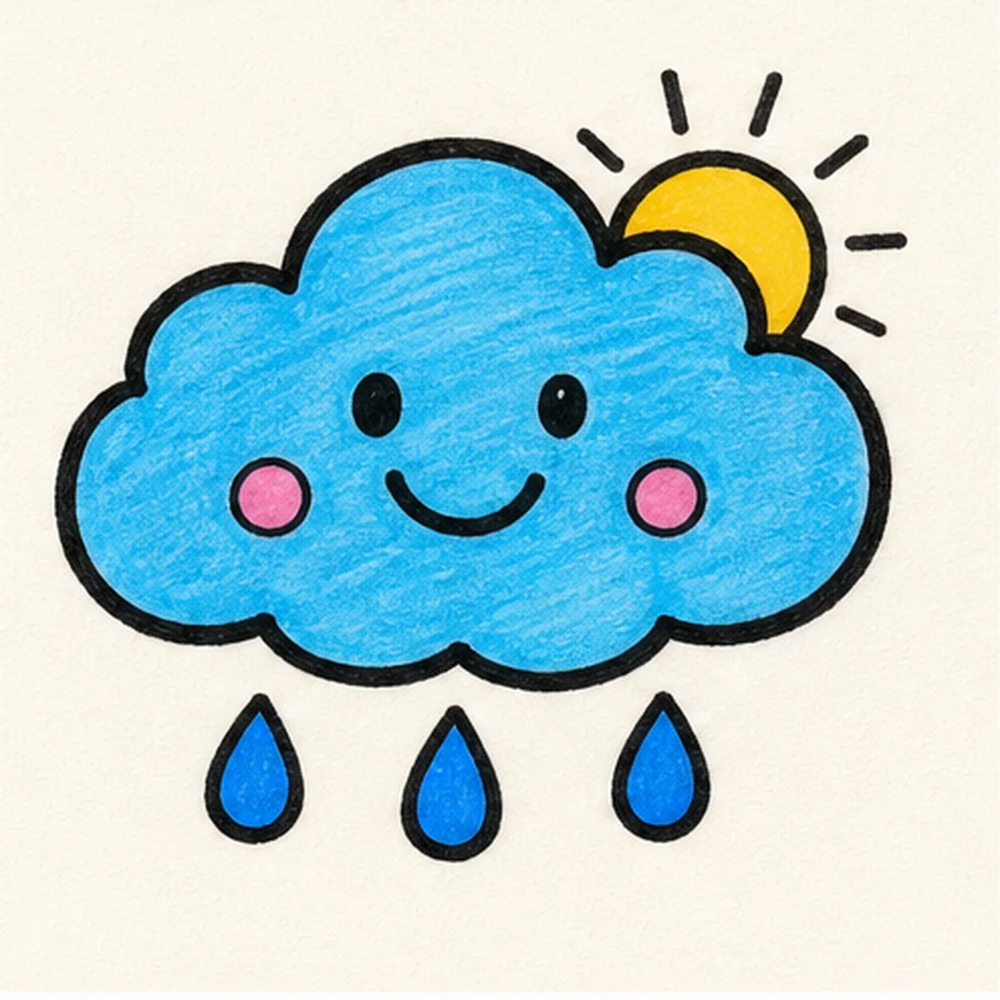

Felt-tip marker mode
Let's doodle a smiling cloud
Treat this as one playful practice round: sketch the idea loosely, simplify the shapes, then commit with confident marker outlines and bright fills.
-
01

Draw the cloud bumps
Draw a puffy cloud outline with a row of rounded bumps and a flatter bottom edge.
Doodle tip: Vary the bump sizes a little. The cloud looks friendlier when it is not perfectly symmetrical.
-
02

Add the smile
Place two simple eyes, a curved smile, and two tiny cheek circles on the cloud front.
Doodle tip: Keep the face low enough that the top bumps still read as the main cloud shape.
-
03

Hang the raindrops
Add three rounded raindrops under the cloud, spacing them evenly across the bottom.
Doodle tip: Make the middle drop a touch lower to keep the row from feeling stiff.
-
04

Peek in the sun
Tuck a tiny half sun behind the upper-right cloud edge and add a few short rays.
Doodle tip: Hide part of the sun behind the cloud. That overlap makes the two weather shapes belong together.
-
05

Fill the weather colors
Thicken the black outline, fill the cloud blue, the sun yellow, the cheeks pink, and the drops a darker blue.
Doodle tip: Color around the eyes and smile slowly so the expression stays crisp.
-
06
Freshen the forecast
Retrace the existing cloud, face, drops, and sun, deepen the marker fills, and add tiny highlights only to shapes you already drew.
Doodle tip: Stop before adding extra lightning or stars. The three drops and little sun already carry the idea.